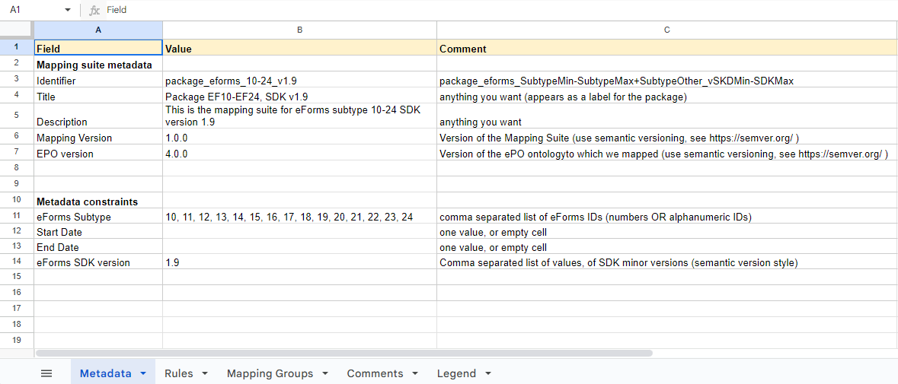

Mapping Suite Structure
The term "suite" or "package" can be used interchangeably.
The structure of a eForms mapping suite is similar to the structure of the Standard Forms (SF) mapping suite, which is documented here.
The most relevant, but small, difference is related to the representation of the metadata, both in the Excel spreadsheet that encodes the Conceptual Mapping (CM) (conceptual_mappings.xlsx), as in the generated metadata.json file.
The eForms Metadata sheet
The content of the "Metadata" sheet of an eForms Conceptual Mapping (which is slighly different from the Metadata sheet of a Standard Forms CM) looks like this:

The fields specified in the Metadata sheet are split into two section based on what type of information they provide. They can (a) describe the suite of mapping rules, and (b) the constraints necessary to identify notices eligible for transformation with this mapping suite (applicable in the context of TED-SWS pipeline).
Mapping suite metadata:
-
Identifier - a unique alphanumeric sequence to identify the mapping suite
-
Title - human-readable name of the mapping suite
-
Description - human-readable concise statement about the mapping suite
-
Mapping version - the version of the mapping suite
-
ePO version - the version of the TARGET ontology
Metadata constraints:
-
eForms Subtype - a comma separated list of eForm subtype IDs
-
Start date & End date - the interval of time when an eForms notice is published. By default, they are empty
-
eForms SDK version - a comma separated list of eForms SDK versions. Only major and minor versions of the SDK are relevant, and not the patch numbers.
The comments in column C provide explanations, where necessary, about what each field in column A stands for, and how the values in column B should be formatted. Note that, in the example above, as in most of the practical cases, there is no value specified for the "Start Date" and "End Date" fields. Those fields can be used to restrict the applicability of a given mapping suite to notices published in a certain date range, which can be useful in certain scenarios (e.g. for testing), but will not be used in setups where the conversion of all the notices that belong to a certain eForms Subtype and were published according to an eForms SDK is desired.
The eForms metadata.json file
After the content of a mapping package is prepared, from the "Metadata" sheet of the CM a metadata.json file, like this one, is generated, with a content similar to this:
{
"identifier": "package_eforms_10-24_v1.9",
"title": "Package EF10-EF24, SDK v1.9",
"created_at": "2024-07-22 16:53:19.047981+00:00",
"description": "This is the mapping suite for eForms subtype 10-24 SDK version 1.9",
"mapping_version": "1.0.0",
"ontology_version": "4.0.0",
"mapping_type": "eforms",
"metadata_constraints": {
"constraints": {
"eforms_subtype": [
"10",
"11",
"12",
"13",
"14",
"15",
"16",
"17",
"18",
"19",
"20",
"21",
"22",
"23",
"24"
],
"start_date": null,
"end_date": null,
"eforms_sdk_versions": [
"1.9"
]
}
},
"mapping_suite_hash_digest": "19766f0a089242004177d1bf929020292866c023a6caa29ec03389bddd83568a"
}The interpretation of the meaning of the keys used in this JSON file should be straightforward based on the explanation provided above for the Metadata sheet of the CM. They are basically lower cased, snake-case versions of the field names in the Metadata sheet. In addition, there are 3 more keys:
-
created_at - the creation timestamp of the mapping suite, more specifically of the
metadata.jsonfile -
mapping_type - the type of the mapping suite. It can be either
standard_formsoreforms(and is the latter for all packages in this project) -
mapping_suite_hash_digest - a hash digest that can serve as a unique key representative of the content of this mapping suite
Note: The mapping_suite_hash_digest is created based on the entire content of the mapping package, and serves as a validation key or signature, in order to ensure the TED-SWS pipeline software that the metadata in this file is valid for the current content of the package.